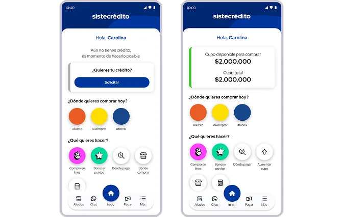
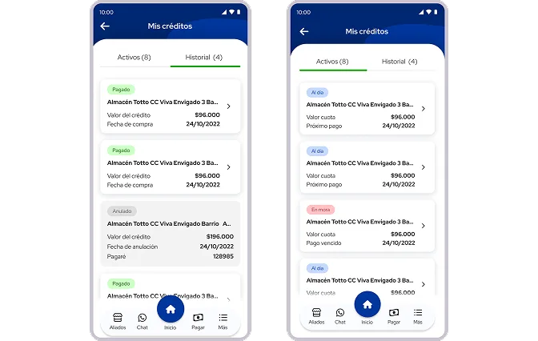
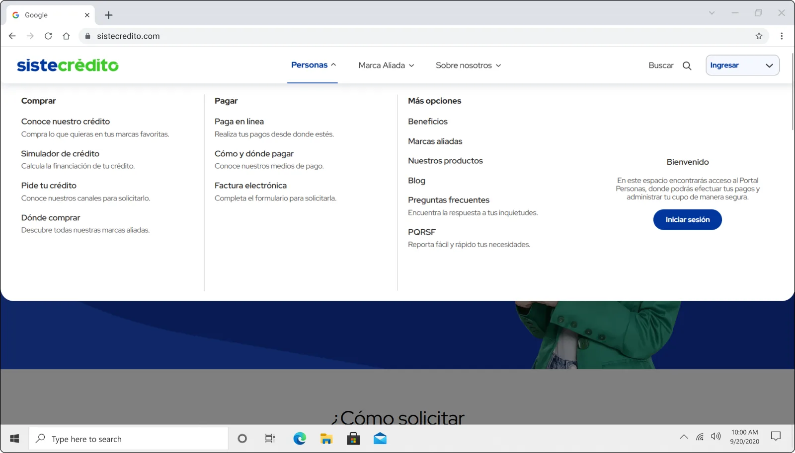
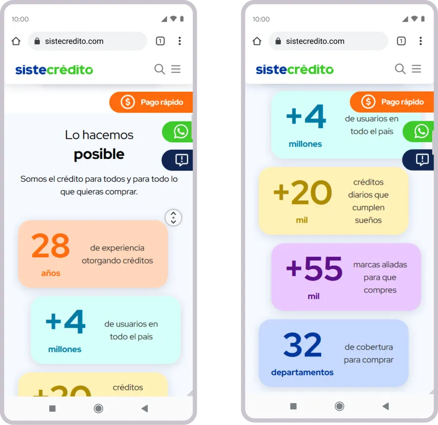
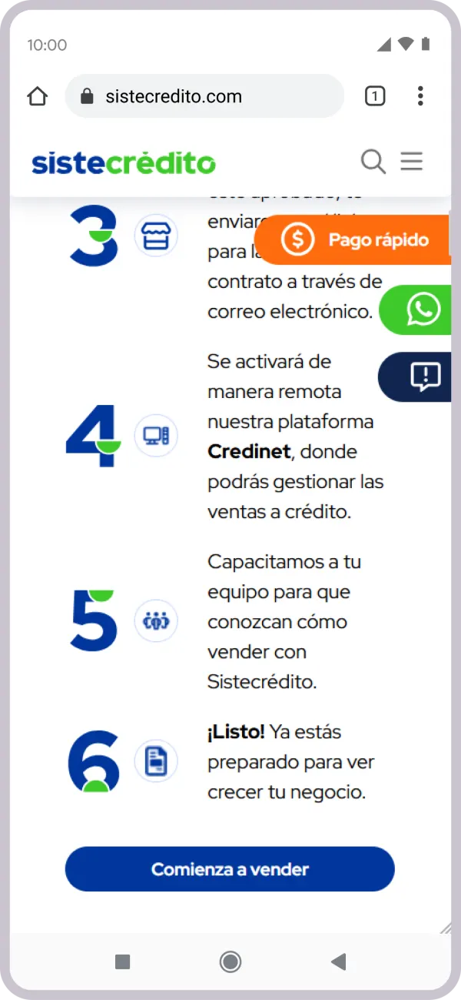
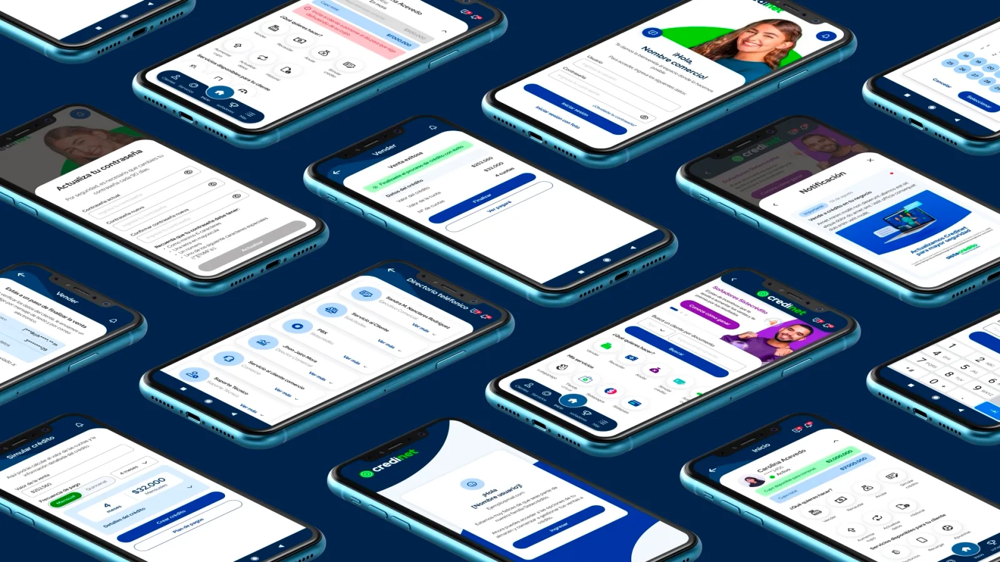
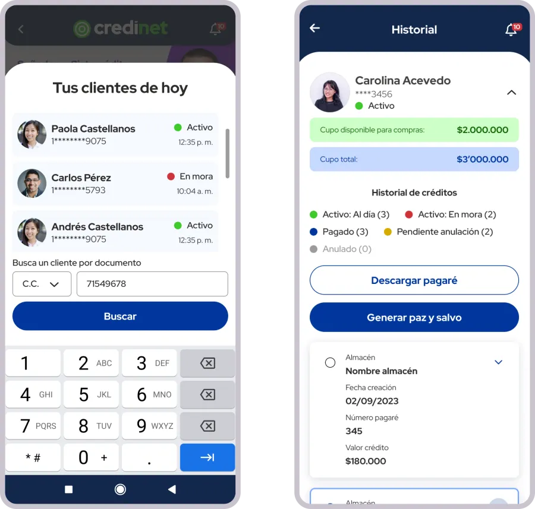
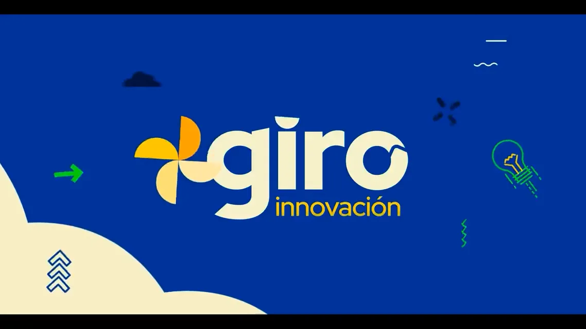

Un ecosistema de crédito que cualquier persona pueda usar
Sistecrédito es una fintech colombiana de compra ahora, paga después (BNPL) con una amplia red de comercios aliados. Durante casi tres años diseñé su app, su sitio web, la pasarela de pagos y Credinet, la plataforma B2B para comercios, con un reto constante: usuarios con poca familiaridad digital, incluidos adultos mayores, y el riesgo de fraude financiero.

Resultados
App BNPL
Reto: una experiencia única en Android, iOS y web, pensada también para adultos mayores, que además ayudara a prevenir fraude y a educar financieramente.
- Rediseño con la nueva identidad de marca, que aumentó la percepción de confianza y modernidad. La calificación en Google Play mejoró 7,8%.
- Investigación etnográfica y cuantitativa sobre cómo se percibe el crédito como medio de pago; de ahí salieron funciones priorizadas como congelar o cancelar créditos.
- Un design system modular gobernado por el equipo de experiencia, que dio consistencia y agilidad para lanzar nuevas funciones.
- Educación financiera integrada en el diseño de interacción.



Sitio web y botón de pago
Reto: un solo portal para clientes, comercios, aspirantes a empleo y servicio al cliente. Lo más difícil fue el mega menú y priorizar los accesos más usados: pagos, PQRS y vacantes.
Botón flotante de pago: un acceso siempre visible e integrado a la pasarela, para pagar sin salir de la página. Pasó por prototipos, pruebas con usuarios y experimentos en producción. Lo usó el 40% del tráfico del sitio y su CTR subió 21,2%.




Pasarela de pagos
Reto: una pasarela que funcionara como centro de pagos para la app, Credinet y aliados externos (incluido Shopify), integrando PSE, Nequi, bancos y bonos propios en una experiencia segura y coherente con el design system.
- Selector de cuotas para pagos segmentados y flexibles.
- UX writing claro y orientado a la acción en cada paso del pago.
- Actualización de user personas, con foco en quienes pagan a crédito por canales digitales.
- Menos dependencia y costo de un medio de pago externo, reemplazado por la pasarela propia.


Credinet (B2B)
Reto: rediseñar la plataforma con la que los comercios aliados venden a crédito. Había crecido en funciones sin estructura de UX y la usaban personas con poca familiaridad digital.
- Onboarding con curva de aprendizaje muy baja: la mayoría entendió la app después de un solo recorrido.
- Cambio rápido de cuenta en el mismo dispositivo, que impulsó el uso por vendedores y habilitó el sistema de gamificación.
- Venta asistida y autogestionada por el cliente, adaptada a cada perfil.
- Research con comercios que fortaleció la propuesta de servicios B2B. Alta aceptación tras los pilotos, pese a la resistencia inicial.



Cultura de innovación
Me invitaron al equipo que estructuró la nueva cultura de innovación de Sistecrédito. Hicimos talleres de co-creación con directivos y entrevistas con personas de todas las áreas, del call center a vicepresidencias. De ahí salieron talleres experienciales, comunidades de práctica, el rol de custodios de innovación y talleres que unían la cultura cafetera de la empresa con Design Thinking y Lean UX.
